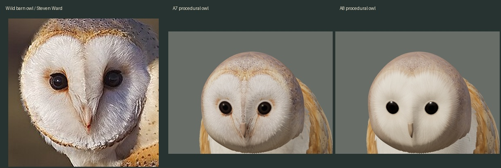
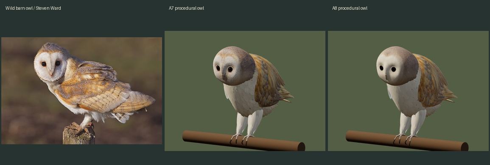
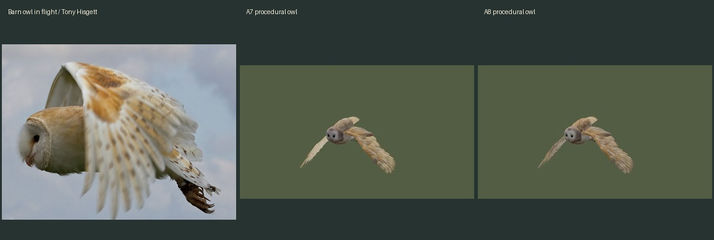

Tyto alba · Surface finishing on approved A7. Each rendered pair places A7 on the left and A8 on the right with the same pose, camera, lights, and exposure.
Material plates
The face uses layered radial color and relief, with softened feather-bed normals around the eyes. Catchlights come from the active lights. The same tract UVs carry the breast and wing detail. Feather height varies the matte normal and roughness response. The legs, toe scales, bill, and claws use a small shared atlas.
Lighting
Six controlled lighting rigs isolate surface response. Thin flight vanes transmit part of the light arriving from behind, with lower transmission at the shafts and roots. The distant LOD skips the transmission and relief work.
Matched motion
Daylight flight, glide, and bank
Overcast takeoff
Sunset approach and grip
Real barn owl references
The field photographs provide visual targets for creamy down, feather direction around the disc, dark corneal reflections, mottled dorsal vanes, and translucency near flight-feather edges. The photographs differ from the studio renders in pose, optics, and lighting.

Radial feathers, ruff and eyelids

Dorsal marks, breast and feet

Wing markings in flight
Source images are cropped and resized. Steven Ward, Barn Owl, Lancashire · Tony Hisgett, Barn Owl 2 · CC BY 2.0.
Regression and performance
All five A7 transition tests passed. Direct checks matched A7 position, index, and morph buffers at all three LODs, along with pose matrices, morph weights, and the per-foot clearance in 13 sampled poses per LOD. Face and breast shading normals are part of the A8 finish. Exact comparison · Transition tests
A7 recorded a 37.9 to 46.7 ms LOD 2 median increase from A6. A8 reruns A7 as its paired control. Timings use ANGLE / SwiftShader at 640 × 500, with 14 warm-up and 42 measured frames per run. They include CPU update, rendering, and synchronous pixel readback. Each table reports medians across repeated runs. Hardware GPU timings were unavailable. Geometry and performance data · Raw samples
All three LODs · matched image coverage
LOD 2 median fell from 40.9 to 33.5 ms at matched coverage (18%). Triangles and draws match A7 at every level. The mesh column counts active index, vertex, and morph buffers.
| Revision | LOD | Triangles | Draws | Mesh + morph MiB | Atlas MiB | Median ms | P95 ms | Median range ms |
|---|
| A7 | 0 | 54,396 | 14 | 2.51 | 5.00 | 122.2 | 168.9 | 116.6–129.8 |
|---|
| A8 | 0 | 54,396 | 14 | 2.59 | 5.33 | 151.8 | 190.5 | 127.5–161.7 |
|---|
| A7 | 1 | 28,728 | 14 | 1.51 | 5.00 | 97.0 | 128.0 | 93.0–99.5 |
|---|
| A8 | 1 | 28,728 | 14 | 1.55 | 5.33 | 104.5 | 153.7 | 100.0–121.8 |
|---|
| A7 | 2 | 10,158 | 14 | 0.54 | 5.00 | 40.9 | 71.9 | 37.2–46.4 |
|---|
| A8 | 2 | 10,158 | 14 | 0.54 | 5.33 | 33.5 | 65.7 | 30.0–36.8 |
|---|
LOD 2 ablations · matched and distant image coverage
| LOD 2 variant | Matched median ms | Matched P95 ms | Matched median range | Distant median ms | Distant P95 ms | Distant median range |
|---|
| A7 | 38.0 | 71.6 | 36.1–39.2 | 14.8 | 46.9 | 14.0–17.5 |
|---|
| A7 no transmission | 33.5 | 65.6 | 30.4–35.0 | 15.8 | 44.8 | 12.4–16.3 |
|---|
| A8 full wing finish | 57.8 | 75.3 | 55.9–58.3 | 15.2 | 46.2 | 15.1–19.3 |
|---|
| A8 | 33.8 | 64.9 | 26.7–34.4 | 15.0 | 45.7 | 14.8–15.5 |
|---|
| A8 fold morph only | 32.2 | 64.4 | 31.7–34.0 | 16.0 | 47.5 | 13.0–16.4 |
|---|
At matched coverage, removing A7 transmission moved its median from 38.0 to 33.5 ms. Restoring A8's full wing finish moved its median from 33.8 to 57.8 ms. The fold-only vertex shader moved it to 32.2 ms with all morph buffers resident. A8 ships the simplified distant material with all A7 morphs active. The distant rig used 39% of the matched image scale. The ranges show three runs per ablation and four runs per matched LOD comparison. Matched ablation data · Matched ablation samples
Reproduce the evidence
python tools/bake-owl-finish.py
python tools/capture-owl-a8.py identity
python tools/capture-owl-a8.py stills
python tools/capture-owl-a8.py motion
python tools/capture-owl-a8.py references
python tools/capture-owl-a8.py measure
python tools/capture-owl-a8.py ablation
node --test --test-isolation=none tests/owl-a7.test.js
On a machine with a hardware WebGL adapter, add --hardware to the measure command. It requires an identified hardware renderer and saves its own files.